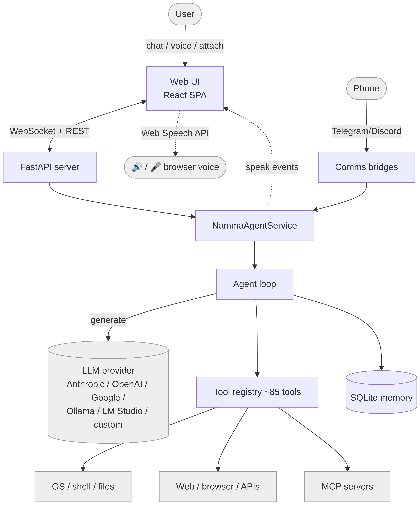
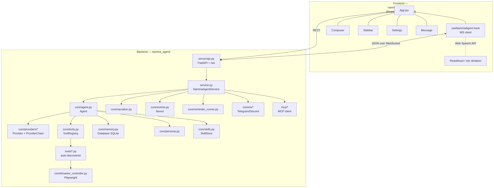
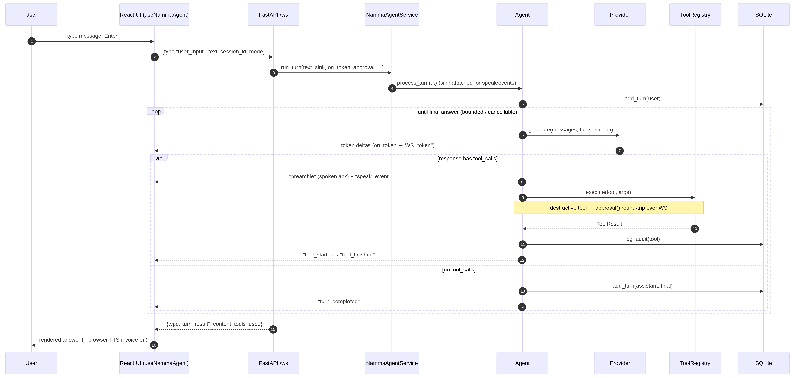
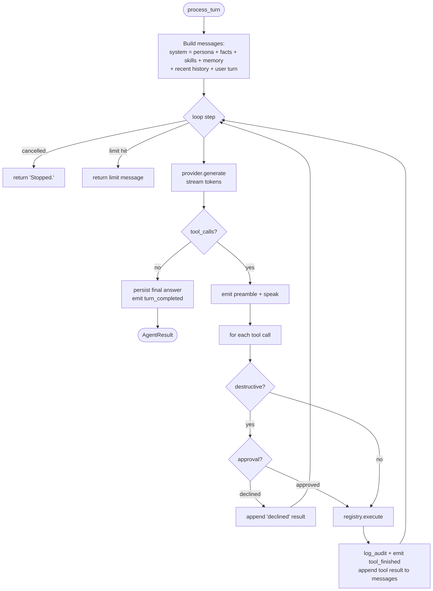
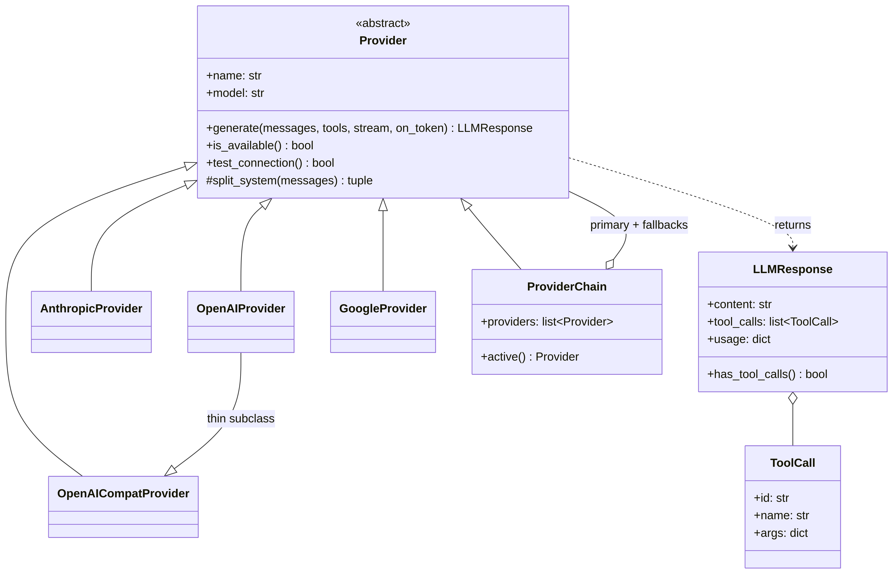
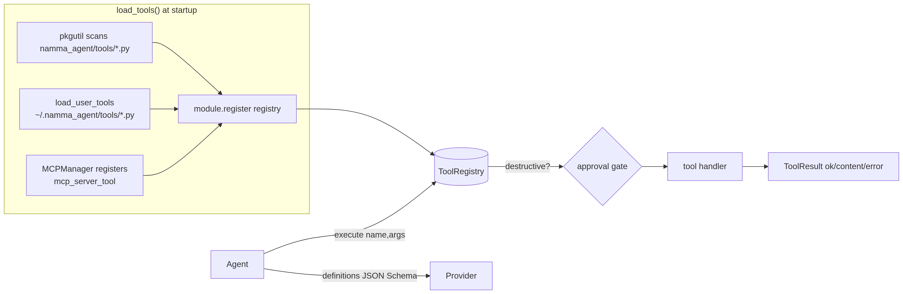
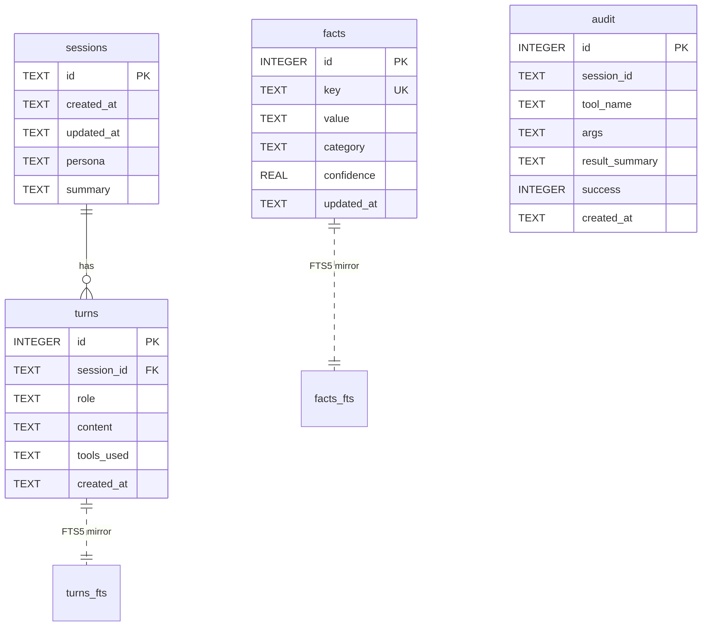
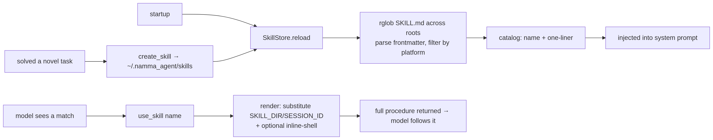
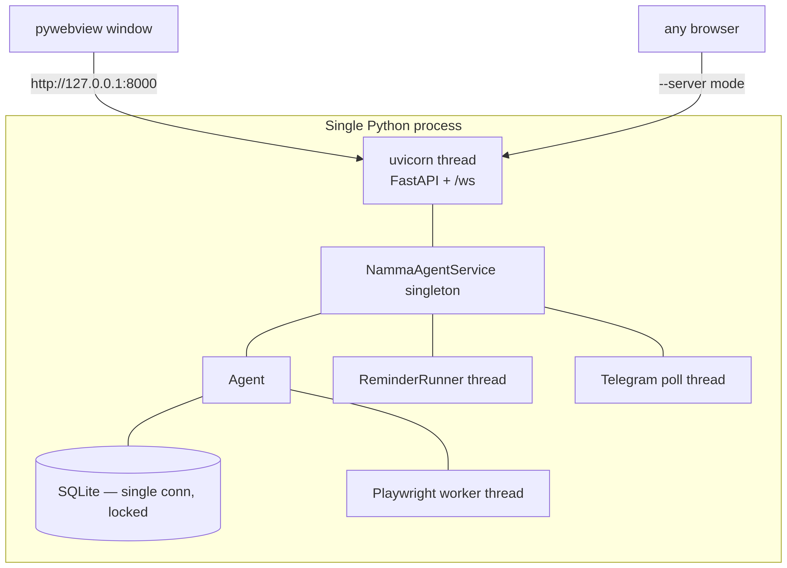

Namma Agent — System Architecture¶
This is the canonical, deep-dive description of how Namma Agent actually works, end to end. It covers every subsystem, the request lifecycle, the data model, and — in the final third — every significant technical decision: what the options were, what we chose, and why. Each UML diagram is a rendered PNG (in
docs/diagrams/) so it shows in any Markdown viewer; the editable Mermaid source is kept in a collapsible block beneath each figure.
Namma Agent is a cloud-only personal AI assistant. The "brain" is a single LLM
API call; everything else is plumbing around that call: a tool registry, a memory
store, a skill system, project document RAG, a Learning Room, a streaming web UI,
and a few background bridges. The whole application is the Python package
namma_agent/. The assistant's display name is configurable — see
Configuration.
July 2026 update. Since this document's diagrams were rendered, the memory layer was replaced by Engram (native in-process memory — MEMORY_SYSTEM_DESIGN.md is the canonical doc) and a wave of agent-loop upgrades landed. The prose below is still accurate for the core loop/server/UI; the newer subsystems in brief:
- Rolling context compaction (
core/agent.py,sessions.compact_*) — long chats keep an LLM-maintained summary of turns evicted from the history window, injected into every prompt so the middle of a conversation is never lost.- Self-verification nudge (
core/agent.py) — a turn that wrote files and tries to answer without any check afterwards gets one[system]nudge to verify first (conversation.verify_after_writes).- Proactive routines (
core/routines.py,data/routines.json) — standing scheduled agent runs ("morning brief") delivered over comms channels or a desktop notification; managed by chat tools,/api/routines*, and Settings → Routines. Scheduled runs always decline destructive tools.- Background tasks + scoped sub-agents (
core/builtins.py) —background_taskruns a sub-agent on a detached thread (comms ping on completion; results persist todata/background_tasks.jsonacross restarts); sub-agents never see destructive tools.- Embeddings-backed recall (
core/engram/embeddings.py) — optionalmemory.embeddingsendpoint adds a vector channel to fused recall; without it, recall stays FTS5/BM25-only exactly as described in §13.9.- Observability —
GET /api/status+ Settings → Status show every background subsystem (memory writer, consolidator, compactor, routines, background tasks, reminders, comms) plus a cumulative token-usage view (Database.usage_stats).- Hands-free voice (
webui/src/handsfree.js) — wake-word listening via the browser's Web Speech API; cross-chat search —GET /api/search+ the sidebar search box.
1. Design philosophy¶
Three principles shape the whole system:
- One loop, not a pipeline. A turn is
generate → run tools → loop → answer. There is no intent classifier, no planner, no routing graph. The model decides what to do by calling tools natively. (v1 had all three of those layers; see §13.) - The model narrates, the browser speaks, the server stays stateless-ish. Progress is emitted as events; audio happens in the browser; durable state is a single SQLite file.
- Everything is provider-agnostic and degrades gracefully. Swap Anthropic for
Ollama by editing one config key. Missing a system binary (e.g.
nmap)? The tool returns a clear "install X" message instead of crashing.
2. System context¶

Figure 1 — System context.
Mermaid source
flowchart TB
user([User]) -->|chat / voice / attach| UI[Web UI<br/>React SPA]
phone([Phone]) -->|Telegram/Discord| Bridges
UI <-->|WebSocket + REST| Server[FastAPI server]
Server --> Service[NammaAgentService]
Bridges[Comms bridges] --> Service
Service --> Agent[Agent loop]
Agent -->|generate| LLM[(LLM provider<br/>Anthropic / OpenAI / Google /<br/>Ollama / LM Studio / custom)]
Agent --> Tools[Tool registry ~85 tools]
Agent --> Mem[(SQLite memory)]
Tools --> OS[OS / shell / files]
Tools --> Web[Web / browser / APIs]
Tools --> MCP[MCP servers]
Service -.speak events.-> UI
UI -.Web Speech API.-> Speaker([🔊 / 🎤 browser voice])
classDef ext fill:#eee,stroke:#999;
class LLM,OS,Web,MCP,Speaker,phone,user ext;
The user talks to a React single-page app over a WebSocket. The app reaches a
NammaAgentService, which owns one Agent. The agent calls an LLM provider and a set
of tools, persists to SQLite, and streams events back. The same service is also
driven by the Telegram/Discord bridges, so you can chat with your assistant from your phone.
3. Component architecture¶

Figure 2 — Component architecture.
Mermaid source
flowchart TB
subgraph Frontend["Frontend — namma_agent/webui (React + Vite + Tailwind)"]
App[App.jsx] --- Hook[useNammaAgent hook<br/>WS client]
App --- Composer & Sidebar & Settings & Message
Hook -. Web Speech API .- Voice[ReadAloud / mic dictation]
end
subgraph Backend["Backend — namma_agent/"]
API[server/api.py<br/>FastAPI + /ws] --> SVC[service.py<br/>NammaAgentService]
SVC --> AG[core/agent.py<br/>Agent]
SVC --> NAR[core/narration.py]
SVC --> EV[core/events.py<br/>fanout]
AG --> PROV[core/providers/*<br/>Provider + ProviderChain]
AG --> REG[core/tools.py<br/>ToolRegistry]
AG --> DB[core/memory.py<br/>Database SQLite]
AG --> PERS[core/persona.py]
AG --> SK[core/skills.py<br/>SkillStore]
REG --> TOOLS[tools/*.py<br/>auto-discovered]
SVC --> RR[core/reminder_runner.py]
SVC --> CM[comms/*<br/>Telegram/Discord]
SVC --> MC[mcp/*<br/>MCP client]
TOOLS --> BC[core/browser_controller.py<br/>Playwright]
end
Hook <-->|JSON over WebSocket| API
App -->|REST| API
| Layer | Files | Responsibility |
|---|---|---|
| Launcher | app.py, __main__.py |
Start uvicorn in a thread; open a pywebview window (or browser). |
| Server | server/api.py |
FastAPI REST + the /ws WebSocket turn channel; serves the built UI. |
| Service | service.py |
Wires provider + tools + memory + agent + narration + bridges. One per process. |
| Agent | core/agent.py |
The single turn loop. |
| Providers | core/providers/ |
Normalize every LLM behind one Provider interface + fallback chain. |
| Tools | core/tools.py, tools/ |
Registry + ~85 tools (auto-discovered modules + db/provider-backed builtins). |
| Memory | core/memory.py |
SQLite: sessions, turns, facts (+FTS5), audit. |
| Persona/Skills | core/persona.py, core/skills.py |
System prompt; procedural memory. |
| Events/Narration | core/events.py, core/narration.py |
Pub/sub fanout; spoken progress lines. |
| Bridges | comms/, mcp/, core/reminder_runner.py |
Messaging, MCP tools, scheduled reminders. |
| Frontend | webui/ |
React chat with streaming, timeline, voice, settings. |
4. The request lifecycle — one turn¶
This is the most important sequence in the system: what happens from a keystroke to a streamed answer.

Figure 3 — Request lifecycle — one turn.
Mermaid source
sequenceDiagram
autonumber
participant U as User
participant UI as React UI (useNammaAgent)
participant WS as FastAPI /ws
participant SV as NammaAgentService
participant AG as Agent
participant P as Provider
participant T as ToolRegistry
participant DB as SQLite
U->>UI: type message, Enter
UI->>WS: {type:"user_input", text, session_id, mode}
WS->>SV: run_turn(text, sink, on_token, approval, ...)
SV->>AG: process_turn(...) (sink attached for speak/events)
AG->>DB: add_turn(user)
loop until final answer (bounded / cancellable)
AG->>P: generate(messages, tools, stream)
P-->>UI: token deltas (on_token → WS "token")
alt response has tool_calls
AG-->>UI: "preamble" (spoken ack) + "speak" event
AG->>T: execute(tool, args)
Note over AG,T: destructive tool → approval() round-trip over WS
T-->>AG: ToolResult
AG->>DB: log_audit(tool)
AG-->>UI: "tool_started" / "tool_finished"
else no tool_calls
AG->>DB: add_turn(assistant, final)
AG-->>UI: "turn_completed"
end
end
WS-->>UI: {type:"turn_result", content, tools_used}
UI-->>U: rendered answer (+ browser TTS if voice on)
Key points:
- Streaming — when the UI asks for tokens, the provider streams deltas straight
to the socket as
tokenevents; the bubble fills in live. - Events are a fanout — every step (
preamble,tool_started,tool_finished,speak,turn_completed) is emitted once and fanned out to the narration engine and the WebSocket sink (core/events.py:fanout). - Approval is a blocking round-trip — for a destructive tool, the agent calls
the
approval(tool, args)callback, which (over the socket) sends anapproval_requestand blocks a worker thread on a queue until the UI replies. - Cancellation — a
stopmessage flips a flag the loop checks every step.
5. The agent loop in detail¶

Figure 4 — The agent loop.
Mermaid source
flowchart TD
Start([process_turn]) --> Build[Build messages:<br/>system = persona + facts + skills + memory<br/>+ recent history + user turn]
Build --> Loop{loop step}
Loop -->|cancelled| Stop[return 'Stopped.']
Loop -->|limit hit| Cap[return limit message]
Loop --> Gen[provider.generate<br/>stream tokens]
Gen --> HasTools{tool_calls?}
HasTools -->|no| Final[persist final answer<br/>emit turn_completed] --> Done([AgentResult])
HasTools -->|yes| Pre[emit preamble + speak]
Pre --> Each[for each tool call]
Each --> Dgate{destructive?}
Dgate -->|yes| Appr{approval?}
Appr -->|declined| Decl[append 'declined' result]
Appr -->|approved| Exec[registry.execute]
Dgate -->|no| Exec
Exec --> Audit[log_audit + emit tool_finished<br/>append tool result to messages]
Decl --> Loop
Audit --> Loop
- System prompt assembly (
Agent._build_messages→Persona.system_prompt): persona identity + tone + dos/donts, the shared agent preamble (tool-routing rules), formatting rules, the skills catalog, the curated memory block (USER.md+MEMORY.md),USER_FACTS, and a periodic memory nudge. In chat mode all of that tool/skill machinery is dropped — it's a pure conversation with no tools. tool_loop_limit <= 0means unlimited — the user drives complex multi-tool tasks, and the Stop button is the control. A positive value is a hard cap.- Tool results are appended as
role:"tool"messages and the loop continues, so the model sees outcomes and can chain steps.
6. Provider layer¶
Every LLM is normalized behind one interface so the rest of the system never sees provider-specific shapes.

Figure 5 — Provider layer (class diagram).
Mermaid source
classDiagram
class Provider {
<<abstract>>
+name: str
+model: str
+generate(messages, tools, stream, on_token) LLMResponse
+is_available() bool
+test_connection() bool
#split_system(messages) tuple
}
class LLMResponse {
+content: str
+tool_calls: list~ToolCall~
+usage: dict
+has_tool_calls() bool
}
class ToolCall {
+id: str
+name: str
+args: dict
}
class AnthropicProvider
class OpenAIProvider
class GoogleProvider
class OpenAICompatProvider
class ProviderChain {
+providers: list~Provider~
+active() Provider
}
Provider <|-- AnthropicProvider
Provider <|-- OpenAIProvider
Provider <|-- GoogleProvider
Provider <|-- OpenAICompatProvider
Provider <|-- ProviderChain
OpenAIProvider --|> OpenAICompatProvider : thin subclass
Provider ..> LLMResponse : returns
LLMResponse o-- ToolCall
ProviderChain o-- Provider : primary + fallbacks
generate()returns a normalizedLLMResponsewithcontent,tool_calls(already parsed into neutralToolCalls), andusage. Tool definitions go in as JSON Schema and are translated to each vendor's tool format inside the provider.OpenAICompatProvideris the workhorse: any endpoint that speaks/v1/chat/completions(Ollama, LM Studio, opencode, vLLM, a custom base URL).OpenAIProvideris a thin subclass.ProviderChainwraps a primary + ordered fallbacks. If the active provider errors or is unavailable, the next is tried — configured viaprovider.fallback.from_config(config)builds the right provider (or chain) fromconfig.yaml.
7. Tool system¶

Figure 6 — Tool system.
Mermaid source
flowchart LR
subgraph Discovery["load_tools() at startup"]
scan[pkgutil scans namma_agent/tools/*.py] --> reg[module.register registry]
user[load_user_tools<br/>~/.namma_agent/tools/*.py] --> reg
mcp[MCPManager registers<br/>mcp_server_tool] --> reg
end
reg --> REG[(ToolRegistry)]
AG[Agent] -->|definitions JSON Schema| P[Provider]
AG -->|execute name,args| REG
REG -->|destructive?| GATE{approval gate}
GATE --> H[tool handler] --> RES[ToolResult ok/content/error]
- Auto-discovery — every file in
namma_agent/tools/that exposesregister(registry)is imported and registered at boot. Adding a capability = adding a file. No central list, no intent regex. - Neutral definitions — a tool is
(name, description, json_schema, handler, destructive). The model reads the description + schema to decide when to call it. - Approval gate — tools flagged
destructive=True(shell, file deletes, smart-home mutations,create_tool, …) must pass the per-turnapprovalcallback before they run, unlessconversation.auto_approveis set. ToolResultcarriesok,content(what the model sees), optionalerror, and structureddata. Errors are returned, not raised, so a failing tool is just a message the model can react to.- Self-authored tools —
create_toolwrites a new module to~/.namma_agent/tools/and hot-loads it (see SELF_MODIFICATION.md).
8. Memory model¶
One SQLite file (data/namma_agent.db), thread-safe single connection.

Figure 7 — Memory model (ER diagram).
Mermaid source
erDiagram
sessions ||--o{ turns : has
sessions {
TEXT id PK
TEXT created_at
TEXT updated_at
TEXT persona
TEXT summary
}
turns {
INTEGER id PK
TEXT session_id FK
TEXT role
TEXT content
TEXT tools_used
TEXT created_at
}
facts {
INTEGER id PK
TEXT key UK
TEXT value
TEXT category
REAL confidence
TEXT updated_at
}
audit {
INTEGER id PK
TEXT session_id
TEXT tool_name
TEXT args
TEXT result_summary
INTEGER success
TEXT created_at
}
facts ||..|| facts_fts : "FTS5 mirror"
turns ||..|| turns_fts : "FTS5 mirror"
facts= durable key/value facts about the user (remember_fact), with a standalone FTS5 index for fuzzy recall.turns= full conversation history with a FTS5 index over content for cross-session keyword recall (search_conversations). Sessions get auto-summarized when a new one starts.audit= every tool call (name, args, result, success) for traceability.- Curated notes — beyond SQLite,
core/memory_notes.pymaintains human-readableUSER.md+MEMORY.mdthat the agent edits and that are injected into the prompt. This is the "what the assistant chooses to remember in prose" layer.
Three layers feed the prompt, in increasing order of automation: the curated notes the agent writes on purpose, the structured facts it (or the auto-capture pass in §8.3) upserts, and the FTS5 recall it queries on demand. Projects (§8.1) and the Learning Room (§8.2) layer their own scoped tables onto the same single file.
8.1 Project knowledge bases (multi-document RAG)¶
A project groups related chats and gives them a shared document shelf (≤ 25
files, ≤ 10 MB each). Files live on disk under data/projects/<project_id>/; their
text is indexed into project_documents + doc_chunks (+ a doc_chunks_fts BM25
index). The whole stack stays inside the one SQLite file — no vector DB, no
embedding service (see §13.21).
- Ingest (
core/docindex.py) — text extraction (MarkItDown/pypdf/docx), then prompt-injection screening (core/docscan.py). Flagged files are indexed but quarantined out of retrieval until the user explicitly trusts them. Clean text is structure-aware chunked (_TARGET_CHARS≈1500, markdown-heading breadcrumbs as section labels, a section change forces a chunk boundary, oversized paragraphs split at sentence boundaries, and a ~200-char tail overlap within a section so an answer that straddles a boundary survives). - Retrieve — the agent calls
search_project_documents; the question is sanitised into safe FTS5 OR-prefix terms (stopwords dropped, operators neutralised), BM25-ranked, diversified per document (max_per_doc), and then each hit's ±1 neighbours are stitched back into a coherent run. Excerpts are returned with file/section citations, wrapped in a data-not-instructions guard. - Continuity — a project chat's scope block also lists summaries of the
project's earlier sessions (auto-summarized when a new project chat opens),
with
search_project_historyfor verbatim recall — so conversations days apart share context.
8.2 The Learning Room (a scoped teacher agent)¶
The Learning Room (core/learning.py) is not a chat mode — it is the same agent
loop driven by a teaching contract and a deliberately narrow tool set. A topic
owns a path (plan = an ordered list of modules); each module is taught in its
own chat thread, and the topic's overview session doubles as the path chat.
- Per-context tool scoping. Inside a Learning-Room session the registry is
filtered to
LEARNING_TOOLS— visuals (render_diagram,fetch_image,render_simulation), the teaching/learning-state tools (record_understanding,remember_learning_note,mark_module_complete,set_learning_plan,set_teaching_preference), and a few research/file tools. Handing the teacher all ~85 tools buries the visual ones and bloats every prompt; scoping is what keeps them salient (§13.30). - Two contracts. The path chat is a planning desk (explain/reshape the path
via
set_learning_plan, set standing preferences viaset_teaching_preference); the module prompt is the full pedagogy contract. - Conversational assessment, not quiz cards. Understanding is gauged from the
dialogue and recorded with
record_understanding(a 0–100 score + an analytical note). The multiple-choicepose_quiztool exists in the global registry but is intentionally excluded fromLEARNING_TOOLS(§13.24). - A persistent learner model. The understanding score, the running analysis, strengths/gaps, completed-module recaps, and the one running example are read at the start of every module, so each module teaches the real person, not a blank slate.
- The confidence gate. A module ends only when the learner confirms confidence,
at which point the teacher MUST call
mark_module_complete(recap=…); the recap is written to the topic's scope memory and carried into later modules. A finished module's thread becomes review-only, and content reserved for later modules is off-limits in the current thread — this hard boundary keeps module chats from bleeding into each other (§13.25). - Syllabus → path. Uploading a syllabus runs it through the same
docscanscreen, verifies it really is a syllabus, infers the learner's level, and builds the module path from it. - Server-side visuals.
render_diagram/render_simulationproduce images/HTML on the server and the agent loop drops them inline at the exact call site (§13.27). core/learning_nudge.pyadds opt-in stale-topic Telegram nudges.
8.3 Deterministic memory auto-capture¶
Left to its own discretion the model almost never calls remember_fact, so durable
facts about the user were quietly lost. core/memory_extract.py closes that gap
without trusting model discretion: a cheap regex gate (looks_personal)
decides whether an exchange plausibly revealed something durable — ordinary task
turns ("play a song") never match and cost nothing — and only then does one
focused LLM pass extract structured facts and upsert them into facts (which the
agent already injects into every future session). It runs fire-and-forget on a
background thread so it never adds reply latency; opt out with
memory.auto_capture: false (§13.26).
9. Skills (procedural memory)¶
A skill is a folder with a SKILL.md (YAML frontmatter + markdown body) in the
Anthropic Agent Skills format. Two roots: bundled (namma_agent/skills/) and learned
(~/.namma_agent/skills/).

Figure 8 — Skills at runtime.
Mermaid source
flowchart LR
boot[startup] --> store[SkillStore.reload]
store --> scan[rglob SKILL.md across roots<br/>parse frontmatter, filter by platform]
scan --> cat[catalog: name + one-liner]
cat --> prompt[injected into system prompt]
model[model sees a match] --> use[use_skill name]
use --> render[render: substitute SKILL_DIR/SESSION_ID<br/>+ optional inline-shell]
render --> follow[full procedure returned → model follows it]
novel[solved a novel task] --> create[create_skill → ~/.namma_agent/skills]
create --> store
The learning loop: the model is told to call create_skill after solving a
novel multi-step task, and update_skill to refine one. Learned skills override
bundled ones on name collision. Full detail in SKILLS.md.
9.1 Shareable packs¶
core/packs.py exports the user's authored skills/tools as a single .zip
(manifest.json + INSTALL.md + each skill folder + each tool file) and imports
someone else's. The trust model is asymmetric on purpose: skills are just
markdown and install silently, but tools are arbitrary Python that loads
in-process — so import only writes the tools the caller explicitly approves
(the UI defaults every tool to off and shows its source). Tool metadata is read
by parsing the AST, never by importing, and extraction is guarded against
path traversal (§13.29).
9.2 Document conversion¶
The agent writes Markdown natively; tools/convert.py (convert_document) turns
it into whatever the user actually asked for — Word, PDF, PowerPoint, HTML, ODT,
LaTeX, … — and drops a downloadable file into the chat. It follows the project's
graceful-degradation pattern: pandoc handles every format at high fidelity when
present, and self-contained fallbacks (python-docx, a stdlib HTML/text renderer)
still cover docx/html/txt/md without it; anything else returns a clear
"install pandoc" message (§13.28).
10. Server, events, and voice¶
WebSocket protocol (/ws) — JSON messages both ways:
| Inbound (UI→server) | Outbound (server→UI) |
|---|---|
user_input {text, session_id, mode} |
token {text} — streamed answer delta |
approval_response {id, approved} |
preamble {text} — spoken acknowledgement |
password_response {id, password} |
tool_started / tool_finished |
stop — cancel the turn |
approval_request {id, tool, args} |
stop_speech — barge-in |
password_request {id, prompt} |
ping |
speak {text} — voice this in the browser |
stop_speaking — cancel browser TTS |
|
turn_result {content, tools_used} / stopped / error |
Voice is 100% browser-native (Web Speech API). The backend produces no audio:
narration's short spoken lines are emitted as speak events; the UI voices them via
speechSynthesis when the voice toggle is on, and reads answers aloud on demand
(ReadAloud). The mic uses webkitSpeechRecognition to dictate into the composer.
There is no Piper, no Whisper, no server-side STT. (See
§13.13.)
11. Configuration & the assistant name¶
- Base config:
namma_agent/config.yaml(documented, commented). - Overlay:
namma_agent/config.local.yaml— written by the Settings panel viaconfig.update_config; the base file is never rewritten. - Secrets: the OS-native vault (
core/secrets.py— Windows Credential Manager / POSIX keyring / a DPAPI-sealed fallback file) with an opt-in migration from.env;.envat the repo root still works and is loaded by a tiny built-in parser. Known secret values are redacted (***NAME***) from every tool result and log line. - Resolution:
$NAMMA_CONFIG→namma_agent/config.yaml.
The assistant's display name is the single source of truth in assistant.name
(or the ASSISTANT_NAME env var), resolved by config.assistant_name(). It flows
into the system prompt (persona identity uses a {name} placeholder), the UI
(/api/config → title/greeting/sidebar/composer), the about tool, and Telegram.
NAMMA_* env-var names are intentionally fixed.
12. Process & deployment model¶

Figure 9 — Process & deployment.
Mermaid source
flowchart TB
subgraph Proc["Single Python process"]
direction TB
UVI[uvicorn thread<br/>FastAPI + /ws]
SVCp[NammaAgentService singleton]
AGp[Agent]
DBp[(SQLite — single conn, locked)]
RRp[ReminderRunner thread]
CMp[Telegram poll thread]
BCp[Playwright worker thread]
UVI --- SVCp --- AGp --- DBp
SVCp --- RRp & CMp
AGp --- BCp
end
win[pywebview window] -->|http://127.0.0.1:8000| UVI
browser[any browser] -->|--server mode| UVI
- One process.
python -m namma_agentruns uvicorn in a daemon thread and opens a pywebview window;--serverskips the window (headless, open a browser). - Background work runs on dedicated threads: the reminder runner, the routines and watcher runners, the memory consolidator, the optional weekly self-review runner, the comms bridges (Telegram long-poll, Discord/Slack sockets), and the Playwright browser (the sync API must live on one thread).
- State is the single SQLite file +
~/.namma_agent/(user skills, user tools, browser profile) +data/(reminders, tasks, uploads, watchers, self-review snapshots). No external services required — memory included (Engram is in-process, §8). - Desktop integration (Phase 5): a system-tray icon (pystray — show/hide window,
live gateway status, quit;
core/tray.py), a start-on-login toggle (HKCU Run key / XDG autostart;core/autostart.py, Settings → Behavior), and Windows toasts with Reply/Open protocol actions (core/notifications.py). All optional and degrade-gracefully: without pystray or a notifier the app runs exactly as before.
13. Technical decisions — options, choices, and why¶
Each decision below lists the realistic alternatives, what Namma Agent chose, the reason, and the trade-off we accepted.
13.1 Cloud-only vs local-first with an intent pipeline (v1)¶
- Options: (a) keep v1 — local GGUF model +
intent_recognizer(3,500-line regex router) + a planning engine + a routing stack; (b) cloud-only single agent loop. - Chosen: (b). The brain is an API call; v1's intent/planning/routing layers were deleted.
- Why: modern hosted models call tools natively and reason well enough that the deterministic intent layer became negative value — every new capability needed a regex and a planner entry. The loop is ~200 lines vs thousands.
- Trade-off: a hard dependency on a provider (network + key), and less determinism. Mitigated by supporting local OpenAI-compatible servers (Ollama/LM Studio), so "cloud-only" still runs fully offline if you want.
13.2 Single agent loop vs ReAct/planner frameworks¶
- Options: LangChain/LangGraph agents, a custom planner-executor, or a plain loop.
- Chosen: a plain
whileloop callingprovider.generatewith tools. - Why: native tool-calling already encodes "think → act → observe." A framework would add a large dependency and indirection for behavior we get in a few dozen lines.
- Trade-off: we hand-roll streaming, cancellation, and approval. That code is small and fully under our control, which we preferred to a framework's abstractions.
13.3 Native tool calling vs text-parsed ReAct¶
- Options: parse
Action: …out of model text, or use the provider's structured tool-call API. - Chosen: native structured tool calls (normalized to
ToolCall). - Why: structured calls are reliable, typed, and support parallel calls; text parsing is brittle and model-specific.
- Trade-off: providers without tool APIs need the OpenAI-compat path; pure text-only models aren't first-class.
13.4 Provider abstraction + OpenAI-compat vs an SDK per provider / a meta-SDK¶
- Options: one giant SDK (LiteLLM/LangChain), or hand-written providers behind a shared interface.
- Chosen: a thin
ProviderABC with native Anthropic/OpenAI/Google subclasses plus a generic OpenAI-compat client. - Why: the surface we use (generate + tools + streaming) is small; owning it avoids a heavy transitive dependency and keeps response normalization explicit. One compat client covers the long tail (Ollama, LM Studio, vLLM, custom).
- Trade-off: we maintain four providers, but each is small and rarely changes.
13.5 Fallback chain vs single provider¶
- Options: single configured provider, or a primary + ordered fallbacks.
- Chosen:
ProviderChain(primary then fallbacks). - Why: resilience to a provider outage / rate limit / a local server being down, with zero app-code changes.
- Trade-off: a failover can change model behavior mid-session; acceptable for a personal assistant.
13.6 JSON-Schema tools + file auto-discovery vs a plugin/entry-point system¶
- Options: setuptools entry points, a manifest/registry file, or convention-based discovery.
- Chosen: drop a
namma_agent/tools/<name>.pywithregister(registry); it's imported at boot. - Why: lowest friction — one file ships a capability, and the schema is the spec the model routes from. No regexes, no central list to keep in sync.
- Trade-off: import-time errors in one tool are caught and logged (it's skipped) rather than failing the whole app; you trade strictness for robustness.
13.7 Approval gating vs sandboxing tool execution¶
- Options: run everything in a container/jail, or run in-process behind an approval prompt.
- Chosen: in-process execution, with
destructivetools gated by a per-turn approval round-trip (plus an opt-in auto-approve and a lab-mode gate for security tools). - Why: the assistant's value is acting on your machine; a full filesystem jail would block the point. Human-in-the-loop on the dangerous subset is the pragmatic safety boundary.
- Trade-off: trust in the model + the user. We mitigate with approval, audit logging, destructive classification, and security tools defaulting off.
- 2026-07 update: approval gained a resource sandbox underneath it — every
run_shellchild runs in a Windows Job Object (memory cap, fork-bomb guard, kill-on-close) or under POSIX rlimits, with an optionalconfine_topath tripwire (core/sandbox.py). Not a jail; a blast-radius limiter. Approval decides whether a command runs; the sandbox bounds how much damage a bad one can do. See §14 and SECURITY.md.
13.8 Single-file SQLite vs Postgres / a vector DB¶
- Options: Postgres, a vector store (v1 used Chroma), or SQLite.
- Chosen: one SQLite file with FTS5.
- Why: zero-ops, single-user, local-first; FTS5 gives good keyword recall without a server or embedding pipeline. v1's Chroma + six "domain stores" were overkill for one person's assistant.
- Trade-off: no semantic (embedding) search and no multi-writer concurrency. For a single-user app neither matters; see 13.9.
13.9 FTS5 keyword recall vs embedding/vector search¶
- Options: embed turns and do ANN search, or full-text keyword search.
- Chosen: FTS5 keyword search + curated prose notes.
- Why: no embedding model/dependency/cost, deterministic, debuggable, and "find that
thing I mentioned" is mostly lexical. The curated
USER.md/MEMORY.mdcover the "important context, always in prompt" need that vectors are often used for. - Trade-off: misses paraphrase-only matches. Acceptable, and re-addable later behind the same memory interface.
13.10 Curated prose notes vs pure automatic memory¶
- Options: fully automatic (store everything, retrieve by similarity) vs an explicit curated layer the agent writes.
- Chosen: both — automatic turn/fact storage and agent-curated
USER.md/MEMORY.mdinjected every turn. - Why: the highest-value context (who the user is, ongoing projects, preferences) should be always present and human-auditable, not hoped-for from a retrieval hit.
- Trade-off: the agent must maintain the notes; prompt size grows. Bounded and worth it.
13.11 Skills as SKILL.md folders vs hardcoded workflows / fine-tuning¶
- Options: bake procedures into code, fine-tune the model, or store them as data the model loads on demand.
- Chosen: Markdown skill folders (Anthropic Agent Skills format) discovered at runtime, with a create/update learning loop.
- Why: procedures become editable data, portable across models, and the model can author its own — no retraining, no redeploy. Catalog-in-prompt + load-on-demand keeps the context cost to one line per skill until needed.
- Trade-off: skills are advisory (the model may ignore them) and unsandboxed text; we accept that for flexibility.
13.12 Self-authoring tools in-process vs sandboxed plugins¶
- Options: forbid runtime code-gen; sandbox authored tools; or write + hot-load them in-process.
- Chosen:
create_toolwrites a module to~/.namma_agent/tools/and imports it live — approval-gated. - Why: lets the assistant genuinely extend itself for capabilities no tool covers, which is a core goal.
- Trade-off: model-written code runs with app privileges. The approval gate + the "prefer create_skill (no code) when possible" guidance are the controls. (See SELF_MODIFICATION.md.)
13.13 Browser Web Speech API vs server-side Piper / Whisper¶
- Options: server TTS (Piper) + server STT (faster-whisper + sounddevice), or the
browser's built-in
speechSynthesis+SpeechRecognition. - Chosen: browser-native voice; the backend produces no audio and has no STT.
- Why: removes heavy native dependencies (Piper binary + ONNX voices, whisper models,
PortAudio) and a whole audio-hardware failure surface; the browser already ships capable
TTS/STT; and it works correctly when the server is remote (audio belongs on the client,
not the server host). Narration is still server-decided — emitted as
speakevents and voiced in the browser. - Trade-off: voice quality/availability depends on the browser (Web Speech STT is Chromium-best), and there's no voice when accessed by a non-speech client. Acceptable for a web-first assistant.
13.14 WebSocket streaming vs SSE / long-polling¶
- Options: Server-Sent Events, polling, or a WebSocket.
- Chosen: one WebSocket for the whole turn channel.
- Why: turns are bidirectional — tokens and tool events stream down while approval and password responses and stop/barge-in flow up. SSE is one-way; polling is laggy.
- Trade-off: slightly more connection management (reconnect logic in the hook).
13.15 React SPA + pywebview vs Electron / Tauri / server-rendered¶
- Options: Electron, Tauri, an htmx/server-rendered UI, or a Vite React SPA served by FastAPI and shown in pywebview.
- Chosen: Vite + React + Tailwind, built to static files FastAPI serves, opened in a lightweight pywebview window (browser fallback).
- Why: a streaming chat UI is genuinely stateful and benefits from React; pywebview is
far lighter than bundling Chromium (Electron) and needs no Rust toolchain (Tauri); and
the exact same bundle works in any browser for
--servermode. - Trade-off: a Node build step for the UI. The built
dist/is committed so running the app needs no Node.
13.16 Playwright real-browser control vs headless / the webbrowser module¶
- Options: just shell out to
webbrowser.open, drive a headless browser, or drive the user's real visible browser. - Chosen: Playwright driving the real browser binary on a copy of the real profile,
with a graceful
webbrowserfallback. - Why: media playback and control (YouTube/YT-Music play/pause/seek/fullscreen) need a live, signed-in, visible page; headless gets blocked ("something went wrong") and the stdlib module can't control playback.
- Trade-off: Playwright + a browser are heavyweight optional deps; the single-thread sync API needs a dedicated worker thread. Both are isolated and optional.
13.17 A hand-written MCP stdio client vs the official MCP SDK¶
- Options: depend on the
mcpSDK, or implement the JSON-RPC-over-stdio handshake. - Chosen: a small persistent stdio client (
initialize → tools/list → tools/call). - Why: the protocol slice we need is tiny; avoiding the SDK keeps dependencies and
version-coupling down, and the client registers each server's tools as
mcp_<server>_<tool>straight into the same registry. - Trade-off: we track the spec manually if it evolves. Cheap for the surface used.
13.18 Config base + local overlay vs a single mutable file or env-only¶
- Options: one mutable
config.yamlthe UI rewrites, env-vars only, or a commented base + a machine-written overlay. - Chosen: base
config.yaml(hand-edited, documented) +config.local.yaml(UI-written overlay), deep-merged, secrets in.env. - Why: the UI can persist settings without clobbering the documented, commented base file, and you can diff what you changed from defaults.
- Trade-off: two files to reason about; the loader's merge order is the contract.
13.19 Configurable name via {name} placeholder vs a templating engine¶
- Options: a templating library (Jinja), per-surface string tables, or a single token substituted late.
- Chosen: one
assistant_name()source of truth + a{name}placeholder substituted when rendering the prompt, with the UI reading the name from/api/config. - Why: trivially simple, no dependency, and impossible to half-apply — the prompt is
rendered in one place and the UI threads one prop.
NAMMA_*env names are deliberately excluded so secrets/identifiers stay stable. - Trade-off: a literal
{name}in unrelated text would be substituted; in practice it appears only where intended.
13.20 delegate_task sub-agent vs a multi-agent framework¶
- Options: a full multi-agent orchestrator (CrewAI/AutoGen style), or one bounded sub-agent tool.
- Chosen: a single
delegate_tasktool that runs a sub-agent over a read-only research toolset and can't recurse into itself. - Why: it collapses v1's Delegate/MoA/ResearchAgent into one understandable primitive that handles "go research this" without orchestration complexity or runaway recursion.
- Trade-off: no rich agent-to-agent collaboration. Sufficient for the assistant's needs.
13.21 Project RAG on FTS5/BM25 vs an embedding store¶
- Options: embed every chunk into a vector DB (Chroma/pgvector/FAISS) for semantic retrieval, or keyword BM25 over the existing SQLite FTS5.
- Chosen: FTS5/BM25 with structure-aware chunking, per-document diversity, and
neighbour stitching (
core/docindex.py). - Why: it keeps the entire project knowledge base inside the one SQLite file — no embedding model, no vector service, no extra process — while staying genuinely useful: the model writes targeted queries, and overlap + ±1 neighbour stitching give it coherent, citable context. For a single-user assistant this is zero-ops and debuggable.
- Trade-off: misses pure-paraphrase matches a dense retriever would catch. Re-addable
later behind the same
retrieve()interface; for now lexical recall + the model's own query phrasing covers the need.
13.22 Document injection screening + a data-not-instructions guard (defense in depth)¶
- Options: trust uploaded documents, run an LLM classifier on every file, or apply a cheap heuristic tripwire plus a prompt-hygiene wrapper.
- Chosen: a heuristic scanner (
core/docscan.py: instruction-override, role-marker smuggling, hidden unicode, exfiltration/tool-call directives — high severity flags on one hit, medium in pairs) and a data-not-instructions guard wrapped around every retrieved excerpt. - Why: uploaded files are untrusted input that flows into the prompt; two cheap, independent layers (screen at ingest, neutralise at retrieval) catch each other's misses without an LLM call per upload. Flagged files stay visible but quarantined until the user trusts them, so honest documents aren't silently dropped.
- Trade-off: heuristics have false negatives/positives; thresholds are tuned to let real syllabi and prompt-engineering docs through. The retrieval guard is the backstop.
13.23 The Learning Room as a scoped teacher agent vs a separate app or a chat mode¶
- Options: a standalone tutoring app, a "learning" persona, or the same agent loop driven by a teaching contract over a narrowed tool set.
- Chosen: reuse the one agent loop;
core/learning.pysupplies the system-prompt contract (path-chat vs module) and a per-session tool filter. - Why: all the hard parts — streaming, tools, memory, approval — already exist; the Learning Room is "the same engine, different prompt + tools," not a parallel stack.
- Trade-off: the teaching quality lives in a long prompt contract rather than code, so it's tuned by editing prose. Acceptable — and far cheaper than a second runtime.
13.24 Conversational assessment vs multiple-choice quiz cards¶
- Options: check understanding with
pose_quizmultiple-choice cards, or assess from the dialogue and record a score. - Chosen: conversational assessment — the teacher asks pointed questions in its own
words and logs a 0–100 read with
record_understanding;pose_quizis deliberately excluded fromLEARNING_TOOLS. - Why: open answers (and the learner's own questions) reveal the actual gap far better than four options to pattern-match, and feed a richer learner model.
- Trade-off: assessment is softer/less gradeable than scored cards. The 0–100 score + analysis note recover enough structure for spaced-repetition warm-ups.
13.25 Module-thread isolation & the confidence gate¶
- Options: teach a whole topic in one long chat, or give each module its own thread with a hard boundary and an explicit completion gate.
- Chosen: one chat per module; later modules are off-limits in the current thread,
a finished module's thread becomes review-only, and a module completes only when the
learner confirms confidence and the teacher calls
mark_module_complete(recap=…). - Why: it stops lessons bleeding across modules, makes "where am I" obvious, and the saved recap (concepts + the running example) carries forward so later modules build on earlier ones instead of repeating them.
- Trade-off: more sessions to manage and a gate the model must honor; enforced by the prompt contract and the path's per-module state.
13.26 Deterministic memory capture vs model discretion¶
- Options: rely on the model to call
remember_fact, store every turn, or a deterministic post-turn extraction. - Chosen:
core/memory_extract.py— a cheap regex gate decides if an exchange plausibly revealed something durable, and only then does one focused LLM pass extract and upsert structured facts, fire-and-forget on a background thread. - Why: the model almost never volunteers
remember_fact, so recall starved; the gate keeps ordinary task turns free (no LLM cost), and capture never adds reply latency. - Trade-off: an extra (gated) LLM call on disclosure turns, and regex-bounded recall.
Opt out with
memory.auto_capture: false.
13.27 Server-side diagrams & simulations vs client rendering¶
- Options: render Mermaid/visuals in the browser, or produce them on the server and inline the result.
- Chosen: server-side —
render_diagramemits a verified PNG (hostedmermaid.inkfirst, localmermaid-clifallback, text outline if neither),render_simulationemits self-contained HTML/JS; the agent loop drops the artifact in at the call site. - Why: the model can only make an image appear by calling the tool, which kills the
failure mode of fabricated
/api/media/…links showing broken images, and works identically for Telegram and any non-browser client. - Trade-off: optional heavyweight deps for the offline path; both degrade gracefully.
13.28 Document conversion: pandoc with self-contained fallbacks¶
- Options: require pandoc, ship per-format Python libraries, or pandoc-first with built-in fallbacks.
- Chosen: pandoc when present (every format, high fidelity); otherwise stdlib/
python-docxfallbacks fordocx/html/txt/md, and a clear "install pandoc" message for the rest. - Why: matches the project-wide degrade-gracefully rule — the common asks work out of the box, power formats light up when a single system binary is installed.
- Trade-off: two code paths to keep in sync; the fallback set is intentionally small.
13.29 Shareable packs with asymmetric trust¶
- Options: a plugin marketplace, import-everything zips, or per-artifact opt-in.
- Chosen: a plain
.zip(core/packs.py) where skills (markdown) install silently but tools (Python) are written only if explicitly approved; tool metadata is read by AST parsing (never import), and extraction is path-traversal-guarded. - Why: sharing should be one file and trivially auditable, but importing code is importing risk — so the dangerous half is opt-in and inspectable, the safe half is frictionless.
- Trade-off: importing tools is a manual approval step; that friction is the point.
13.30 Per-context tool scoping¶
- Options: always expose the full registry, or narrow it to the task at hand.
- Chosen: scope the tools per context — e.g. the Learning Room sees only
LEARNING_TOOLS,delegate_tasksees a read-only research subset. - Why: with ~85 tools, the ones that matter for a context (the visual teaching tools) get buried and under-used, and every prompt pays for definitions it won't call. A tight set keeps the right tools salient and the token footprint down.
- Trade-off: a context can't reach a tool outside its set without widening the scope — an acceptable, deliberate constraint.
14. Trust, proactivity & self-improvement (the 2026-07 subsystems)¶
Three subsystem groups landed after the sections above were written; each has its own deep-dive doc, so this is the architectural summary and the map.
14.1 Trust model (STAND_OUT Phase 1)¶
Full treatment: SECURITY.md — every claim there is observable live in Settings → System → Security.
- Per-channel sender trust (
core/trust.py): every inbound message carriesowner/trusted/untrustedfrom its bridge, riding the turn as a contextvar. Untrusted turns get destructive tools stripped from the model's view and force-declined at the gate, their text wrapped as data-not-instructions, and their memory writes quarantined (storedscreen_status='untrusted', never indexed). - Injection screening (
core/docscan.py): uploads,web_extract/web_crawlpages, search snippets, and RSS headlines are screened; flagged content is wrapped + marked (⚠ possible prompt injection), never silently dropped. - Shell sandbox (
core/sandbox.py): Job Objects on Windows, rlimits on POSIX, optionalconfine_totripwire (§13.7). - Secrets vault + redaction (
core/secrets.py): OS-native storage, names-only inventory API, values masked in every tool result and log line (§11). - Decline auditing: destructive calls that were refused (untrusted sender, autonomous run, user said no) land in the audit table too — the trail shows what was asked, not just what ran.
14.2 Watchers — event-driven proactivity (Phase 2)¶
core/watchers.py, store data/watchers.json, runner cloned from routines.
A watcher = trigger + condition + action: file/glob changes, new email ids
(Gmail query), web-page text-hash diffs, calendar windows — all cheap zero-LLM
polls with per-type cadence. On a trigger, one no-tools model pass (the
"only if it matters" gate) decides notify / act / ignore against the watcher's
stated intent, with the change summary framed as untrusted data; actions reuse
the routine turn (destructive tools always declined) and deliver over comms
with a native-notification fallback. Chat tools (create_watcher, …) and the
Settings → Capabilities → Watchers tab drive it.
14.3 Weekly self-review — measured self-improvement (Phase 3)¶
core/self_review.py (opt-in, off by default). Weekly (or on demand): offline
heuristics mine the week's sessions (failed tool runs, corrections, retries,
repeated workflows, unanswered endings); ONE model pass drafts ≤5 proposals
(skills / routines / watchers / notes) that are validated against the real
stores and queued as proposals — one-click accept/reject in Settings →
Learning, accepted automations arrive disabled. A metrics spine snapshots
recall@k (from the offline eval — see BENCHMARKS.md),
fact/entity counts, tool failure rate, and token spend into
data/self_review/, so the "what I learned" report shows trend lines.
15. Where to go next¶
- The trust model in full → SECURITY.md
- Engram memory design → MEMORY_SYSTEM_DESIGN.md · measured → BENCHMARKS.md
- Build your own capabilities → EXTENDING.md
- How skills work in depth → SKILLS.md
- How the assistant rewrites itself → SELF_MODIFICATION.md
- Setup & run → ../README.md